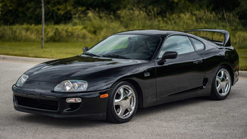

TOYOTA
A história da Toyota já tem a inovação, qualidade e satisfação dos consumidores na sua origem. Com o objetivo de facilitar a vida de sua mãe e milhares de trabalhadores, em 1892 o jovem Sakichi Toyoda apresentou, com apenas 24 anos, o primeiro tear automático do Japão. Sempre em busca de novas tecnologias e maneiras de desenvolver a indústria japonesa, Sakichi conheceu nos Estados Unidos a invenção que iria colocar o seu nome na história: o automóvel.
Investindo o lucro de suas invenções em seu sonho e indo contra as críticas de todos, Sakichi incumbiu seu filho Kichiro de construir o primeiro veículo motorizado do Japão. Foi assim que em 1935, Kichiro apresentou ao mundo o protótipo A1 e, em 1937, inaugurou a Toyota Motor Company. Foi o início de uma história que iria atravessar décadas e apresentar ao mundo uma nova forma de fabricar produtos, com uma filosofia de melhoria contínua para oferecer mais satisfação aos consumidores.
Hoje a Toyota é a maior montadora do planeta, com atuação em 160 países e conhecida pela sua qualidade, inovação e respeito às pessoas e ao meio ambiente.